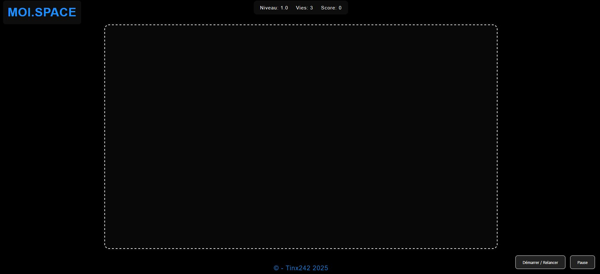
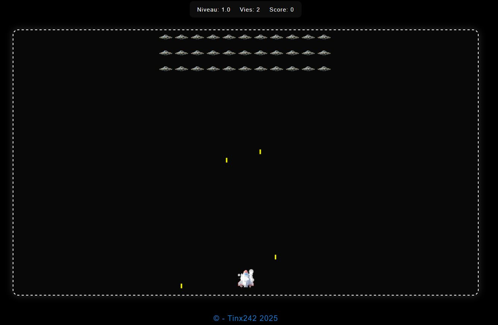
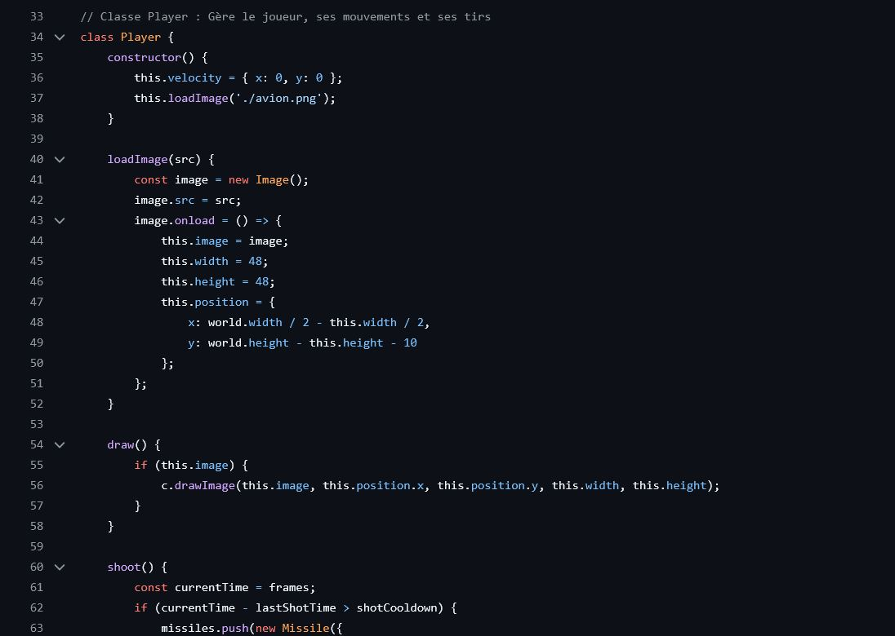

🎯 Contexte du projet
MOI.SPACE est un jeu web inspiré de Space Invaders, développé entièrement en HTML, CSS et JavaScript. En tant que développeur passionné de jeux vidéo classiques, j'ai conçu ce jeu pour offrir une expérience nostalgique alliant gameplay rétro et graphismes modernes. Le joueur affronte des vagues d'envahisseurs spatiaux et accumule des points au fil des niveaux. Ce projet explore les mécaniques de jeu côté navigateur : boucle de jeu, gestion des collisions, animations canvas et contrôles clavier.
🎓 Objectifs pédagogiques
- Canvas HTML5 : Dessiner et animer les éléments du jeu dans un canvas
- Boucle de jeu : Implémenter une game loop avec requestAnimationFrame
- Gestion des collisions : Détecter les impacts entre tirs et ennemis
- Contrôles clavier : Gérer les événements keyboard pour déplacer le vaisseau
- Système de score : Compter et afficher les points en temps réel
- JavaScript orienté objet : Structurer le jeu avec des classes (Joueur, Ennemis, Tirs)
✨ Fonctionnalités principales
1. Gameplay classique Space Invaders
Le joueur contrôle un vaisseau spatial se déplaçant horizontalement et doit abattre des vagues d'envahisseurs qui descendent progressivement vers lui. Le rythme s'accélère au fil de la partie pour un défi croissant.
2. Système de tir
Le joueur peut tirer des projectiles vers les envahisseurs à l'aide du clavier. La détection de collisions est gérée en JavaScript pour identifier les impacts et mettre à jour le score en conséquence.
3. Compteur de score
Chaque ennemi abattu rapporte des points affichés en temps réel à l'écran. Le score s'incrémente dynamiquement tout au long de la partie pour encourager le joueur à battre ses records.
4. Interface intuitive
L'interface est simple et épurée, pensée pour une prise en main immédiate. Les contrôles clavier sont accessibles et la lisibilité des éléments à l'écran est soignée pour une expérience de jeu fluide.
📸 Captures d'écran

Écran de jeu

Système de score

Boucle de jeu
🗄️ Architecture de l'application
Structure du projet :
- index.html : Page principale contenant le canvas du jeu
- game.js : Boucle de jeu principale et gestion des états
- player.js : Classe joueur, déplacements et tirs
- enemies.js : Gestion des vagues d'envahisseurs et collisions
- style.css : Mise en forme de l'interface et du canvas
🛠️ Stack technique

HTML5
Structure de la page et élément Canvas pour le rendu graphique du jeu

CSS3
Mise en forme de l'interface, fond spatial et lisibilité des éléments de jeu

JavaScript
Boucle de jeu, gestion des collisions, contrôles clavier et système de score
🚀 Défis relevés
- Implémentation d'une boucle de jeu fluide avec requestAnimationFrame
- Gestion des collisions entre projectiles et envahisseurs
- Animation des déplacements ennemis avec accélération progressive
- Contrôles clavier réactifs sans latence perceptible
- Affichage du score en temps réel sur le canvas
- Structuration du code en classes JavaScript pour une meilleure maintenabilité